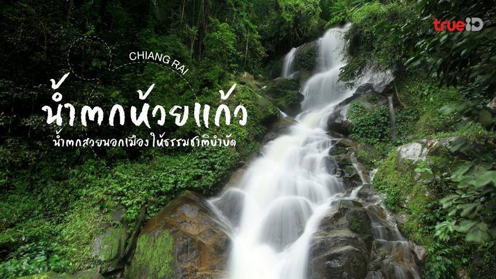

น้ำตกที่คนคึกคัก
น้ำตกห้วยแก้ว เป็นน้ำตกขนาดเล็กสูงประมาณ 10 เมตร ตั้งอยู่ใน อุทยานแห่งชาติดอยสุเทพ-ปุย ใกล้กับตัวเมืองเชียงใหม่. มีน้ำไหลตลอดทั้งปี
และบริเวณโดยรอบมีความสวยงาม ร่มรื่นด้วยต้นไม้นานาชนิด. นอกจากน้ำตกแล้ว ยังมีสถานที่น่าสนใจอื่นๆ ใกล้เคียง เช่น ผาเงิบ และ วังบัวบาน

วิดีโอแนะนำ น้ำตกห้วยแก้ว
ข้อมูลทั่วไปของสวนสัตว์เชียงใหม่
- ที่ตั้ง: ตำบลสุเทพ อำเภอเมืองเชียงใหม่ (เชิงดอยสุเทพ ใกล้สวนสัตว์เชียงใหม่)
- ความสูงของน้ำตก: ประมาณ 10 เมตร
- ลักษณะพื้นที่: เป็นน้ำตก 1 ชั้น มีแอ่งน้ำเล็ก ๆ ที่ด้านล่าง สามารถลงเล่นน้ำได้
- เวลาที่เหมาะในการเที่ยว: ตลอดปี แต่สวยงามที่สุดช่วงฤดูฝน (ก.ค.–ต.ค.)
ไฮไลต์ของน้ำตกห้วยแก้ว
- ใกล้ตัวเมือง
- -เดินทางเพียง 10–15 นาทีจากใจกลางเชียงใหม่ เหมาะสำหรับผู้ที่มีเวลาน้อย
- อนุสาวรีย์พระราชชายา เจ้าดารารัศมี
- อยู่ใกล้บริเวณน้ำตก เป็นอีกจุดที่นักท่องเที่ยวแวะสักการะ
- บรรยากาศร่มรื่น
- รายล้อมด้วยต้นไม้ใหญ่ อากาศเย็นสบาย เหมาะสำหรับปิกนิก
- จุดเริ่มเดินป่าขึ้นดอยสุเทพ
- น้ำตกห้วยแก้วเป็นจุดเริ่มต้นของเส้นทางเดินป่า “ทางขึ้นวัดพระธาตุดอยสุเทพ”
การเดินทาง
- จากตัวเมืองเชียงใหม่: ใช้ถนนห้วยแก้ว มุ่งหน้าไปทางดอยสุเทพ ผ่านมหาวิทยาลัยเชียงใหม่และสวนสัตว์เชียงใหม่ น้ำตกจะอยู่ทางซ้ายมือ
- พาหนะที่เหมาะสม: รถยนต์, มอเตอร์ไซค์, หรือรถสองแถวแดง
ข้อควรรู้
- ไม่มีค่าเข้าชม
- ควรระมัดระวังลื่นในฤดูฝน
- สามารถนำอาหารไปนั่งทานได้ แต่ควรรักษาความสะอาด
- ควรแต่งกายสุภาพหากจะเข้าไปไหว้พระที่อนุสาวรีย์ใกล้น้ำตก